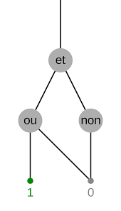

Cours de science des données et calcul
Les circuits booléens

Les circuits booléens consistent en :
- Des entrées contenant des valeurs booléennes
- Des portes logiques permettant de calculer (le ET binaire, le OU binaire, la négation NON unaire)
- Des "câbles" pour relier ces portes
- Des sorties correspondant à la sortie du calcul